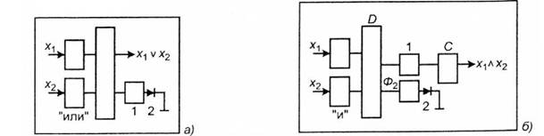

электронный
ресурс по учебной дисциплине 1-58 01 01 - "ИНЖЕНЕРНО-ПСИХОЛОГИЧЕСКОЕ ОБЕСПЕЧЕНИЕ ИНФОРМАЦИОННЫХ ТЕХНОЛОГИЙ"
|
||
| Оглавление | Программа | Теория | Практика| Контроль знаний | Об авторах | ||
|
Содержание
Тема 5 Приборы с зарядовой связью (ПЗС)
1. Аналоговые процессоры на ПЗС-структурах. Аналоговые приборы предназначены для обработки информационных сигналов, заданных в виде непрерывных функций. Особый интерес представляют ПЗС-структуры. Приборы с зарядовой связью используются в различных системах для хранения и обработкицифровой и аналоговой информации. ПЗС позволяют осуществлять обработку цифровой и аналоговой информации, а именно: Различают цифровые, аналоговые и фоточувствительные ПЗС. К аналоговым ПЗС следует отнести линии задержки (ЛЗ), фильтры, аналоговые процессоры. Линии задержки выполняют функцию задержки сигналов. Для приборов ПЗС линия задержки или регистр сдвига являются базовым элементом (рисунок 5.1, а). Различают последовательные, параллельные и последовательно-параллельные линии задержки. В ЛЗ с последовательной организацией зарядовые пакеты последовательно сдвигаются через все N элементов ПЗС (рисунок 5.1, б). Время задержки определяется тактовой частотой fT и числом элементов N: (5.1) Максимальная ширина полосы пропускания аналогового сигнала равна половине значения тактовой частоты Df=f/2. Такая простая организация ЛЗ при N = 102¸103 позволяет получить небольшую задержку сигнала. Для получения большей задержки используется последовательно-параллельная организация ЛЗ (рисунок 5.1, г). Информационный поток последовательно вводится с частотой fT во входную последовательную секцию и после ее заполнения вся строка параллельно сдвигается в нижний регистр. В выходной секции зарядовые пакеты в последовательной форме передаются на выход, воспроизводя исходный сигнал. 2. Линия задержки на ПЗС-структурах. Линия задержки на ПЗС-структурах позволяет регулировать задержку сигнала в пределах от звуковых частот до частот телевизионных и радиолокационных сигналов. Рисунок 5.1 – Конструкция линий задержек на ПЗС Фильтры на ПЗС являются дискретно-аналоговым прибором и служат для частотного разделения сигналов, определенного полосой пропускания. Входной сигнал в них дискретизируется во времени или представляется совокупностью значений (отсчетов, выборок). Выборки обрабатываются в фильтрах по определенным правилам. Различают Трансверсальные фильтры на ПЗС реализуются на основе ЛЗ с отводами, имеющими различные весовые коэффициенты в соответствии с требуемой полосой пропускания (рисунок 5.2, а). Взвешивание сигналов в фильтрах осуществляется с помощью разделения элементов на две части. Величина зарядового пакета делится пропорционально площади электродов. Суммирование взвешенных сигналов осуществляется с помощью тактовых шин, на которые подаются идентичные тактовые импульсы. Протекающие токи считываются раздельно, и разность сигналов усиливается дифференциальным усилителем (ДУ). Такая конструкция называется трансверсальным фильтром и имеет точность взвешивания 1—2%. Трансверсальный фильтр может производить операцию свертки U1(t)* U2(t) входного сигнала U1(t) с импульсной характеристикой фильтра U2(t). Трансверсальный фильтр не имеет обратных связей. Корреляторы предназначены для перемножения двух аналоговых сигналов, например, входного сигнала U(t) и опорного U(t + r), т.е. U(t)xU(t + r). Коррелятор конструктивно состоит из двух линий задержки на ПЗС с отводами, подключенными к умножителям и сумматору (рисунок 5.2, б). Один входной сигнал вводится в ЛЗ1 и там хранится, другой — в ЛЗ2. Сигналы с соответствующих вводов перемножаются, суммируются и на выходе формируется свертка двух сигналов. Рисунок 5.2 – Использование линий задержки в качестве фильтра (а) и коррелятора (б) Тенденция развития фильтров на ПЗС будет идти по пути расширения универсальности, улучшения характеристик, а также максимальной интеграции электронного обрамления. На аналоговых устройствах можно построить сложные многофункциональные системы обработки аналоговых сигналов — процессоры. Аналоговые процессоры являются высокопроизводительными, имеют малые габариты, массу и низкую потребляемую мощность, высокую надежность, характеризуются высокой степенью функциональной интеграции. К аналоговым процессорам относятся, например, программируемые трансверсальные фильтры. У таких фильтров весовые коэффициенты программируются с помощью микропроцессора. 3. Фоточувствительные приборы с зарядовой связью (ФПЗС). Фоточувствительные приборы с зарядовой связью (ФПЗС) являются весьма перспективными процессорами. ФПЗС является изделием функциональной электроники, предназначенным для преобразования оптического изображения в электрический сигнал, действие которого основано на формировании и переносе зарядовых пакетов под действием света по поверхности или внутри полупроводника. Различают линейные и матричные ФПЗС. В линейных ФПЗС фоточувствительные элементы расположены в один ряд. За один период интегрирования линейный ФПЗС воспринимает изображение и преобразует в электрический (цифровой) сигнал одну строку оптического изображения. В режиме накопления информации в потенциальных ямах ФПЗС накапливаются фотогенерированные зарядовые пакеты, а затем эти фоточувствительные элементы используются для транспортировки зарядовых пакетов к выходу. Эта конструкция линейных ФПЗС проста, но в ней происходят искажения сигналов за счет засветки в процессе сканирования (рисунок 5.3, а). Целесообразно разделить функции накопления и сканирования. С этой целью вводят дополнительный регистр сдвига (рисунок 5.3, б) и разрешающий затвор. Фотогенерированные зарядовые пакеты формируются в фоточувствительных элементах секции накопления. Затем на разрешающий затвор поступает отпирающее напряжение, и весь массив информации параллельно переносится в соответствующие элементы регистра сдвига, защищенного от света. На следующем периоде накопления формируется новая конфигурация зарядовых пакетов, а предыдущие пакеты передаются на выход. В таком приборе устраняется влияние засветки. Рисунок 5.3 – Конструкции линейных ФПЗС: а — без разделения областей накопления Линейные ФПЗС используются в системах, где движется объект либо сам прибор. В настоящее время разработаны линейные ФПЗС, имеющие 2048 элементов разложения с шагом 12 мкм, интегральную чувствительность ~5х102 В*м2/Дж, динамический диапазон 60—70 дБ на частоте вывода информации 20 МГц. Матричные ФПЗС представляют собой фоточувствительные приборы с переносом заряда, в которых фоточувствительные элементы организованы в матрицу по строкам и столбцам. За один период интегрирования матричный ФПЗС преобразует в электрический сигнал один кадр оптического изображения. В этом приборе зарядовые пакеты передаются на выход путем перемещения потенциальных ям, вызываемого периодическим изменением амплитуды управляющих импульсов. В конструкции ФПЗС с кадровой организацией различают секцию накопления, секцию хранения, входные и выходные регистры сдвига (рисунок 5.4). Секции накопления и хранения образуются трехфазными поликремниевыми электродами, имеющими, например, 288 строк и 360 столбцов каждая. В малокадровом режиме изображение можно проектировать на обе секции. Все регистры имеют идентичные входные устройства, работающие по методу уравнения потенциалов инжекции — экстракции.
1, 2, 3— регистры; — секция накопления; 5— секция хранения Рисунок 5.4 – Схема матричной ФПЗС с межкадровым вычитанием Обычно обработка видеосигналов ведется внешними устройствами на дискретных элементах. В приборах с зарядовой связью заложены возможности обработки видеосигнала непосредственно в кристалле. В этом случае можно говорить о встроенном процессоре, который может производить межкадровую обработку видеосигнала, подчеркивание контуров, устранение точечных дефектов, распознавание образов. Другими словами, процессор представляет собой устройство функциональной электроники, осуществляющее процесс одномоментной обработки большого информационного массива в реальном масштабе времени. С целью выделения информации о движущихся объектах на сложном стационарном фоне стараются подавить изображение его стационарных частей в обоих полукадрах. Режим работы ФПЗС состоит из следующих циклов. Информация в виде i-го кадра накапливается в секции накопления, а затем переносится в секцию хранения; информация (i + 1) кадра накапливается в секции накопления и происходит синхронная передача зарядов i-го и (i + 1 )-го кадров на выход через регистры 2 и 3. Таким образом, матричная структура запоминает оба кадра видеоинформации и одновременно выводит их на дифференциальный усилитель, в котором происходит поэлементное, межкадровое вычитание. Операция межкадрового вычитания может быть представлена в виде: (5.2) где Ui(t) - видеосигнал i-го элемента текущего кадра; Ui(t+nTK)- видеосигнал i-го элемента, задержанный на время, кратное времени кадра Тк; n — целое число; DUi(t) — видеосигнал межкадровой разности i-го элемента. Таким образом, реализован режим обработки разностной информации в большом информационном массиве. Существует также фоточувствительный прибор с зарядовой инжекцией (ФПЗИ), в котором перемещение зарядового пакета происходит внутри фоточувствительного элемента с последующей инжекцией в подложку или область стока заряда. Такие структуры имеют следующие достоинства: практическое отсутствие потерь передачи; возможность использования в качестве фоточувствительных элементов фотодиодов, имеющих большую по сравнению с МД11-структурами чувствительность; возможность организации произвольной выборки любого элемента или группы элементов. Изготовление ФПЗС можно осуществлять по двум технологиям. В приборах с поверхностным каналом перенос сигнальных зарядовых пакетов осуществляется на границе раздела "окисел—полупроводник". В этом типе ФПЗС легко управлять переносом, однако, взаимодействие зарядовых пакетов с поверхностным состоянием приводит к захвату и эмиссии носителей. Все это приводит к снижению эффективности переноса носителей при низких уровнях освещенности. В технологии с объемным каналом переноса зарядовых пакетов предусмотрено заглубление канала путем его ионного легирования примесью с проводимостью, противоположной подложке. Этот технологический прием существенно увеличивает эффективность переноса, но несколько снижает управляемость. В последнее время весьма перспективны ФПЗС для цветного телевидения, конструктивно оформленные в виде строчных или строчно-кадровых матриц с числом элементов 500x500 и совмещенных с цветокодирующим фильтром. На основе ФПЗС разрабатывается серия многоэлементных приемников изображения средневолнового и длинноволнового ИК диапазона длин волн. В их основе гибридные структуры с интегральными элементами считывания и предпроцессорной аналоговой обработкой видеосигнала на кристалле. Тепловизионные системы на основе ИК ПЗС по пороговой температурно-пространственной чувствительности и быстродействию не уступают лучшим образцам современных тепловизоров. 4. Цифровые процессоры на ПЗС-структурах. Цифровые процессоры на ПЗС-структурах предназначены для обработки сигналов в виде дискретных функций, и их можно разделить на структуры для арифметико-логической обработки информации и структуры для хранения информации — запоминающие устройства. В цифровые ПЗС можно включить регистры сдвига, логические и арифметические устройства, запоминающие устройства. В них информация представляется двумя уровнями зарядов, локализованных в потенциальной яме под затвором. Состояние логической единицы определяется максимальным зарядовым пакетом в яме, состояние логического нуля — отсутствием заряда или величиной фонового заряда. Следует заметить, что цифровые устройства ПЗС являются устройствами динамического типа, т. к. необходима регенерация информации. К основным аналоговым операциям относятся сложение, вычитание, умножение, умножение на весовой коэффициент, дифференцирование, интегрирование. Операцию аналогового сложения в зарядовой форме можно произвести различными способами, зависящими от конструкции ПЗС. В схемах параллельного сложения зарядовые пакеты величиной Q1, Q2 и Q3 передаются по п параллельным каналам ПЗС (рисунок 5.5, а). Суммирующий элемент должен иметь зарядовую связь с элементами цепочек. Суммирование осуществляется в процессе слияния всех зарядов qi из параллельных цепочек в потенциальную яму суммирующего элемента, т. е.
(5.3) где QS— суммарный заряд, который должен уменьшаться в потенциальной яме суммирующего элемента емкостью СS. В схеме последовательного сложения между суммирующими последними тактовыми электродами расположен экранирующий электрод, создающий потенциальный барьер и препятствующий обратной передаче зарядов из суммирующего элемента (рисунок 5.6, б). На суммирующий затвор подается импульс ФS, длительность которого больше периода следования тактовых импульсов. На срезе распределения фазы Ф3 очередной зарядовый пакет перетекает через экранирующий элемент в потенциальную яму суммирующего элемента и складывается с ранее переданными зарядами. Зарядовая емкость суммирующего элемента определяется условием: (5.4) а — параллельный; б — последовательный; в — на плавающих затворах Рисунок 5.5 – Схемы суммирования зарядовых пакетов: Аналогичным способом зарядовые пакеты можно суммировать в плавающей диффузионной области. В каждый элемент поступает определенный зарядовый пакет. На общей шине находится емкостная нагрузка. Используя принцип суперпозиции, можно вычислить изменение потенциала при суммировании зарядового пакета на общей шине нагрузочной емкости. Полное изменение потенциала при поступлении зарядовых пакетов во все элементы определяется выражением: (5.5) Таким образом, выходной сигнал на плавающей шине будет пропорционален сумме зарядовых пакетов. Этот прием позволяет производить суммирование без разрушения зарядового пакета. Операцию вычитания аналоговых сигналов можно производить различными способами (рисунок 5.6). Одним из способов является формирование пакета заряда, пропорционального разности напряжений на электродах (рисунок 5.6, а). В этом случае используются перекрестные связи затворов, которые управляются напряжениями аналоговых сигналов U 1 и U2. Если U1>U2 то в верхнюю цепочку элементов заряд не поступает вследствие более глубокой потенциальной ямы в первом элементе верхней цепочки по сравнению со второй. Таким образом, после этапа экстракции электроны будут экстрагированы обратносмещенной n+-областью истока. В нижнюю цепочку будет введен зарядовый пакет величиной
(5.6) Для случая U1 < U2 заряд вводится только в верхнюю цепочку, т. е.
(5.7) Итак, разность двух сигналов U2 - U1 формируется в нижней цепочке, если разность положительная, и в верхней— при отрицательной разности. При считывании сигналов из обеих цепочек можно определить как разность потенциалов U1 - U2, так и знак этой разности. а — с перекрестными связями; б — с зарядом смещения; в — на плавающих затворах Рисунок 5.6 – Схемы вычитания зарядовых пакетов Другой способ предусматривает представление входных сигналов в виде зарядовых пакетов. Разностный сигнал преобразуется в нужную форму: в виде заряда или напряжения (рисунок 5.7, б). Во входной элемент инжекции — экстракции вводится фиксированный зарядовый пакет q0. Этот заряд делится между двумя элементами, затворы которых находятся под напряжением U1 и U2. При достаточно медленном спаде напряжения на шине Ф2 соблюдаются квазистатические условия передачи. Это означает, что поверхностный потенциал шины Ф2 и электродов U1 и U2 одинаковы и φ1 = φ1. Если (5.8) То (5.9) Таким образом, в верхней и нижней цепочке электродов будут передаваться заряды, q0 /2 тличающиеся от половинного заряда 0 на величину, пропорциональную разности ходных сигналов (U1 - U2). При считывании выходной сигнал будет смещен относительно среднего уровня, соответствующего q0 /2 (при U1 - U2) на величину, пропорциональную U2 – U1. Операцию вычитания можно реализовать на плавающих затворах (рисунок 5.6, в). При этом используется эффект умножения потенциала затвора при передаче зарядового пакета в элемент с плавающим затвором. Если объединить два плавающих затвора и в один вводить заряд q1, а из другого выводить заряд q2, то заряд q1 вызовет понижение потенциала, а выводимый заряд q2 — повышение потенциала плавающего затвора. Результирующее изменение потенциала плавающей шины будет пропорционально разности зарядовых пакетов, передающихся по верхним и нижним цепочкам. Операцию дифференцирования можно реализовать путем соединения плавающих затворов двух соседних разрядов (рисунок 5.7, а). При этом зарядовый пакет Qn(nT) из элементов 1 экстрагируется и вызывает увеличение потенциала UA, одновременно в элемент 2 вводится зарядовый пакет Qn[(n + 1)T], соответствующий следующей выборке сигнала. На плавающей шине формируется сигнал, пропорциональный разности двух зарядов или производной передаваемого аналогового сигнала. Операция интегрирования сигнала является обратной операции дифференцирования и осуществляется суммированием (накоплением) зарядовых пакетов. На ПЗС-структурах выполняют аналогово-цифровые и цифроаналоговые процессоры, мультиплексоры и демультиплексоры. Мультиплексор, например, служит для временной задержки и накопления информации (рисунок 5.7, б). Тактовая частота подбирается таким образом, чтобы задержка между отдельными входами была равна времени перемещения изображения между входными приемниками. При этом происходит когерентное сложение зарядовых пакетов. Важно отметить, что шумы складываются некогерентно. Логические ячейки и операций могут быть реализованы с помощью комбинации уже рассмотренных устройств, предназначенных для арифметических операций.
Рисунок 5.7 – Схемы дифференцирования и умножения сигналов (а) и мультиплексора(б) Подадим на входные электроды в отдельности или на оба сразу напряжение, соответствующее логической единице. Возникающий зарядовый пакет также будет иметь величину, соответствующую логической единице (рисунок 5.7). С любого из входов Х1 или Х2, благодаря зарядовой связи перемещается под общий электрод и далее индицируется как логическая единица. Если же логическая единица подается сразу на оба входа, то на общем электроде будет удвоенный заряд. Для преобразования такого удвоенного зарядового пакета в зарядовый пакет, соответствующий логической единице, формируется регулируемый сток заряда. Он отделяется от потенциальной ямы под общим электродом с помощью потенциального барьера в виде ионно-легированной области. Высота барьера выбирается такой, чтобы в потенциальной яме оставался зарядовый пакет, строго соответствующий логической единице. Стоком является обратносмещенный p—n-переход.
 а — схема реализации функции ИЛИ; б — функции И Рисунок 5.8 – Логические ПЗС-ячейки: На рисунке 5. 8, а представлена логическая ПЗС-ячейка, выполняющая операцию логического сложения (ИЛИ). Логическая ячейка для операции логического умножения (И) строится аналогично ячейке типа ИЛИ. За время действия напряжения фазы Ф1 потенциальные ямы образуются под электродами D и С. Под электрод С заряд попадает только в том случае, если на оба входа Х1 и Х2 подаются одновременно зарядовые пакеты, соответствующие логической единице. По окончании действия фазового напряжения Ф1 начинает действовать напряжение Ф2. Этим напряжением зарядовый пакет перемещается на выход из-под электрода С, а из-под электрода D переводится в обратносмещённую область и затем экстрагируется. По такому принципу конструируются логические ячейки, выполняющие комбинацию логических функций. Малые размеры логических ячеек позволяют формировать сложные арифметико-логические устройства. 5. Запоминающие устройства на ПЗС-структурах. Запоминающие устройства на принципах зарядовой связи легко реализуются с помощью ячеек аналоговой памяти. По существу эти ячейки являются конденсаторными МОП-структурами, в которых хранится зарядовый пакет или отсутствует вовсе. В первом случае говорят о хранении логической единицы, в другом — логического нуля. Объединенные в линейки такие ячейки образуют регистры сдвига. Постоянное запоминающее устройство (ПЗУ) состоит из накопителя с однократной записанной информацией и системы вывода информации на регистрах с зарядовой связью. Один из вариантов ПЗУ на ПЗС для хранения аналоговых сигналов содержит регистр сдвига, связанный с МОП-конденсаторами, размеры которых соответствуют записанной информации. На рисунок 5.9, а изображен отдельный элемент такого устройства, где трехтактный регистр Р1—Р3 непостоянно связан с конденсаторами постоянной памяти К1—КЗ. В режиме считывания на выбранный конденсатор подается напряжение и под его электродом накапливается заряд, пропорциональный площади последнего. Затем напряжение подается на выбранный электрод, и заряд передается в регистр. Это выполняется одновременно во всех элементах, так что регистр принимает параллельный код, который затем поступает к выходному усилителю. Элементы хранения отделены от регистра, подобно фоточувствительным элементам в фотоприемниках со строчной разверткой. Однако они могут быть совмещены с электродами переноса, как показано на рисунок 5.9, б. При этом информация представлена величиной заряда, встроенного в электродный диэлектрик. Наличие такого заряда приводит к модуляции поверхностного потенциала вдоль канала ПЗС, что позволяет считывать записанный заряд. а — элемент памяти вне регистра; б — элементы памяти, совмещенные с электродами переноса Рисунок 5.9 – ПЗУ на ПЗС: Операция считывания протекает в две стадии: вначале производится передача информации из постоянного накопителя в регистры ПЗС, затем — перенос зарядовых пакетов к выходу устройства. Первая стадия зависит от способа представления информации в накопителе, который при соответствующих управляющих сигналах определяет процесс генерации зарядовых пакетов, степень заполнения ими потенциальных ям или распределение зарядов между соседними элементами. Информация записывается в диэлектрике, что обуславливает различное пороговое напряжение на электродах и одновременно различную управляющую способность. При подаче напряжения на электроды выбранной фазы под ними образуются потенциальные ямы различной глубины. Заполнение их зарядом, за счет естественной термогенерации, создает зарядовый рельеф, отображающий ранее записанную информацию. Для ускорения заполнения ям "опрашивающие" заряды подводят с помощью самого ПЗС. Репрограммируемое постоянное запоминающее устройство (РПЗУ) на ПЗС позволяет перезаписывать информацию в процессе работы в соответствии с введенным в него массивом зарядовых пакетов. Из некоторых способов хранения информации перепрограммирование допускает лишь заряд, встроенный в диэлектрик, но сам диэлектрик должен быть усложнен: диэлектрик с захватом заряда и диэлектрик со встроенным плавающим затвором. Запоминающее устройство с произвольной выборкой по считыванию (ЗУ 11В) на ПЗС позволяет считывать информацию из произвольной ячейки матрицы. В их основе лежит матрица ПЗС с дополнительной системой электродов, обеспечивающих произвольную выборку. Как известно, произвольная выборка возможна и в приборах с инжекцией заряда, но зарядовое считывание в матрицах большого объема дает очень слабые выходные сигналы, налагает чрезмерно жесткие требования на ее элементы, в особенности на усилители считывания. Более перспективным представляется использование токового считывания. В этом случае заряд, хранимый элементом, модулирует протекающий в нем ток. Допустимы различные способы токового считывания при ориентации канала транзистора в различных направлениях по отношению к каналу ПЗС (рисунок5.10): в горизонтальном (а, б) и в вертикальном (в, г).
Рисунок 5.10 – Комбинация элемента ПЗС с транзистором: горизонтальный канал -» транзистора поперек (а) и вдоль канала ПЗС (б); вертикальный канал | транзистора со стоком в отверстии электрода ПЗС (в) и в виде изолирующей диффузионной области (г) Области стока и истока канального транзистора могут быть включены в конструкцию дополнительно, но можно использовать и структуры, входящие в ПЗС- подложку, например, области изолирующей стоп-диффузии. При горизонтальном канале на подложке необходимо наличие слоя противоположного типа проводимости. Для вертикального канала размеры стока должны быть меньше глубины области пространственного заряда. Итак, ЗУ строятся на основе регистров сдвига, позволяющих реализовать в ячейках два устойчивых состояния "1" или "0" и перемещать информацию по регистру. По методу поиска адреса ячейки памяти ЗУ делятся на устройства с произвольным и последовательным доступом информации. ЗУ с произвольным доступом позволяют использовать в любой момент времени любую ячейку и имеют число выходов блока выборки, равное числу адресов блока запоминания. ЗУ на основе регистров сдвига на ПЗС относятся к устройствам с последовательным доступом к информации. Для увеличения времени хранения информации зарядовые пакеты непрерывно циркулируют по ПЗС-структуре путем передачи их с выхода на вход через устройство регенерации, позволяющее компенсировать утечку и рассасывание зарядов. а — серпантинно-петлеобразная; б — с произвольной выборкой блоков; в — со строчной адресацией; последовательно —параллельно — последовательная Рисунок 5.11 – Структурные схемы ЗУ на ПЗС: Конструктивно ЗУ организовываются по различным схемам (рисунок 5.11). Регистры сдвига могут быть объединены в виде серпантинно-петлевой структуры (рисунок 5.11, а) с элементами регенерации R. Перспективными также являются структуры ЗУ с произвольной выборкой (рисунок 5.11, б) и со строчной адресацией (рисунок 5.11, в). Структуры с последовательно — параллельно — последовательной адресацией (ППП) образуют регистр, состоящий из матрицы параллельно включенных регистров сдвига с последовательным переносом двух регистров — входного и выходного. Информация последовательно заносится в верхний регистр, затем переносится параллельно в матрицу и в ней построчно сдвигается. Достигнув выходного регистра, информация заносится в него, а затем последовательно сдвигается к выходному устройству. Структура типа ППП должна содержать элементы регенерации R, восстанавливающие уровень зарядовых пакетов. ЗУ на ПЗС большой емкости строятся по блочной структуре или с блочной выборкой. Основной областью применения ЗУ на ПЗС является буферная память. Так замена буферной памяти на магнитных дисках в ЭВМ позволит резко сократить габариты, потребляемую мощность, другие технические характеристики. Плотность записи информации в ЗУ на ПЗС может достигать 105 бит/см2 при скорости записи и считывания 5 Мбит/с. К недостаткам ЗУ на ПЗС следует отнести ограниченное время хранения информации в ЗУ, а также энергозависимость схем. 6. БИСПИН-приборы. БИСПИН-приборы представляют собой полупроводниковые структуры с БИСмещенным Переходом и Инжекционной Неустойчивостью. Эти приборы преобразуют входной аналоговый сигнал в регулярную последовательность импульсов тока или напряжения. В качестве континуальной среды используется полупроводниковая структура с распределенным p+—n- или n+—p-переходом (рисунок 5.12, а). На поверхности слаболегированной n- или p-области формируют нелинейный А и омический В контакты. В качестве нелинейного контакта может выступать встроенный локальный n+—p—n- или p'—n—p-транзистор. Рисунок 5.12 – БИСПИН-структура (а), форма генерируемых импульсов (б) и условное обозначение (е) На поверхности сильно легированной p+- или п+-подложки формируется омический контакт С. Если к контактам А и В приложить определенную разность потенциалов UAB таким образом, чтобы п+-область была включена в прямом направлении, а затем структуру осветить со стороны слаболегированной области, то во внешней цепи появляются импульсы тока определенной частоты следования. При большой скважности импульсы тока имеют релаксационную форму (рисунок 5.12, б). В промежутках между импульсами тока на контакте С имеют место пилообразные импульсы напряжения. Аналогичная генерация проявляется и без подсветки, но при пропускании тока через распределенный р+—п- переход. Увеличение интенсивности подсветки или уровня Тока в подложку приводит к пропорциональному росту частоты следования импульсов без изменения их амплитуды, величина которой определяется разностью потенциалов UAB на структуре. Таким образом, БИСПИН может рассматриваться как релаксационный генератор, имеющий три независимых канала управления: потенциальный, токовый и гальванически развязанный — световой. Каждый из каналов характеризуется порогом генерации, величина которого зависит от состояния двух других каналов, и с их помощью легко изменяется в большую или меньшую сторону. В зависимости от напряжения питания, уровня освещенности или тока в подложку БИСПИН может находиться в трех состояниях: - закрытое, с низкой проводимостью, когда внутреннее сопротивление структуры между контактами Аи В определяется сопротивлением обратносмещенного коллекторного перехода локального транзистора и составляет ~ 108 Ом; - открытое, с высокой проводимостью, когда сопротивление структуры не превышает единиц кОм. В это состояние структура переходит при больших уровнях токов в подложку или подсветку; - автоколебательное. Из сказанного выше следует, что БИСПИН может работать как ключ, если время нарастания подаваемого на его вход сигнала не превышает периода следования импульсов при максимальной частоте повторения. Физический механизм работы БИСПИНа в автоколебательном режиме состоит в следующем. После включения источника напряжения благодаря тому, что сопротивление обратносмещенного коллекторного перехода локального транзистора существенно превышает сопротивление Rn n-слоя, коллекторный потенциал φк потенциал под омическим контактом φв совпадают с точностью до 10-3 В, т. е. φк = φв. Такого же уровня достигает потенциал подложки φ . Следовательно, распределенный p+—n-переход находится под нулевым смещением. При включении света за счет внутреннего фотоэффекта происходит зарядка распределенного p+—n-перехода и возникает инжекция дырок из подложки в n-слой. При этом часть дырок попадает в коллекторную область встроенной локальной n+—p—n-структуры. Для дырок в n-слое коллекторный переход является экстрактором, благодаря чему они поступают в p-базу локального транзистора и скапливаются в ней. Последнее обстоятельство приводит к понижению потенциального барьера эмиттерного n+—p-перехода и инжекции электронов из n-эмиттера в узкую p-базу, после пролета которой они оказываются в n-слое структуры. Возникает электронный ток Im протекающий по n-слою вдоль распределенного p+—n-перехода к омическому контакту. Следует иметь в виду, что этот электронный ток во много раз больше тока дырок, поступающих в p-базу локального транзистора. Падение напряжения InRn на распределенном сопротивлении n-слоя (Rn =3 – 5 кОм) приводит к снижению потенциала φк вблизи коллекторного перехода . (5.10) Поскольку потенциал подложки ф вследствие ее высокого уровня легирования можно считать независимым от координаты, то смещение на распределенном р+—п- переходе вдоль него изменяется. Прямое смещение этого перехода под коллектором локального транзистора увеличивается, а в остальной, большей его части, сначала уменьшается, а затем становится отрицательным. Инжекция дырок из p+-облаети в p-базу транзистора при этом растет, что в свою очередь вызывает еще больший перекос в смещении p+—n-перехода и т. д. Процесс развивается лавинообразно и приводит транзистор в режим насыщения. Вольтамперная характеристика структуры имеет S-образный вид, и в этом случае следует ожидать токовую неустойчивость. При небольших уровнях фототока основной поток дырок в p-область локального транзистора поступает из p+-подложки за счет двух процессов: перераспределения фототока и перезарядов барьерной емкости p+—n-перехода. В начале процесса дырки, образующиеся вследствие внутреннего фотоэффекта, захватываются полем объемного заряда p+—n-перехода и перебрасываются в p+-подложку, благодаря чему он весь равномерно переходит в состояние прямого смещения (до 0,3 В). Вследствие этого дырки также равномерно инжектируются в n-слой по всей площади распределенного перехода, и в базу транзисторной структуры поступает лишь небольшая их часть, определяемая величиной площади этого перехода, расположенной под коллектором локальной структуры. Вследствие развивающейся описанной выше петли положительной обратной связи (включающей ток вдоль n-слоя, падение потенциала φк и рост прямого смещения на p+— n-переходе) распределенный переход оказывается бисмещенным, происходит перераспределение инжекционного тока дырок, в результате чего все фотодырки, собранные основной обратносмещенной частью p+—n-перехода, поступают через прямосмещенную часть в базу локальной транзисторной структуры. К этому току добавляется ток перезарядки емкости р+—n-перехода через открытую вертикальную n+— p—n—p+-структуру. Оценки показывают, что начальный всплеск тока в импульсе носит емкостный характер, и его амплитуда линейно зависит от разности потенциалов на структуре. После прекращения перезарядки p+—n-перехода количество дырок, поступающих в базу локальной транзисторной структуры, резко сокращается и остается только поток "фотодырок". Концентрация их в базе из-за рекомбинации резко сокращается и все большая часть коллекторного перехода выходит из насыщения, сопротивление растекания коллектора увеличивается, коллекторный ток снижается и площадь прямосмещенной части p+— n-перехода уменьшается. Если фототок настолько велик, что ток вдоль p+—n-перехода обеспечивает сохранение на нем прямосмещенного участка, то структура остается открытой. В противном случае она переходит в закрытое состояние, и весь процесс повторяется (автоколебательный режим). Таким образом, в процессе развития импульса p+—n-переход проходит четыре состояния: с нулевым смещением, прямосмещенное, обратносмещенное и бисмещенное. Последнее обстоятельство послужило основанием для названия структуры и прибора. Возможности практического применения БИСПИНов определяются их многофункциональностью, высокой чувствительностью по входу; большой амплитудой выходного сигнала; малыми темновыми токами; широким диапазоном перестройки; большой крутизной преобразования "аналоговый сигнал—частота следования импульсов"; наличием на выходе сигналов двух типов — релаксационного токового и пилообразного (напряжения); широким диапазоном напряжений питания; большим интервалом сопротивления нагрузки. Особого внимания заслуживает вопрос о применении БИСПИНов в устройствах контроля. Здесь возможны два направления: - использование БИСПИНа как датчика, например, светового потока, температуры, тока, напряжения и т. д. - использование БИСПИНа в качестве преобразования "аналоговый сигнал— частота" для любых стандартных и выпускаемых промышленностью датчиков. На рисунке 5.13 приведены фотошаблоны для изготовления БИСПИН-прибора на основе пластин легированного бором кремния. Рисунок 5.13 – Комплект фотошаблонов для изготовления БИСПИН-приборов (а, б, в, г, д, е) и их общий вид (ж) После процессов окисления, нанесения фоторезиста и сушки производится первая фотолитография областей разделения (рисунок 5.13, а). Затем следуют процессы травления окисла, снятия фоторезиста, химическая обработка и разделительная высокотемпературная диффузия бора. Новый технологический цикл процессов снятия окисла, химической обработки пластин, окисления и второй фотолитографии рисунок 5.13, б). Циклы травления окисла, снятие фоторезиста, химическая обработка позволяют подготовить пластину к проведению базовой диффузии бора. База формируется размером 350x350 мкм, глубиной залегания 2,4 мкм и концентрацией примеси бора 1018 см-3. Третья фотолитография проводится с целью формирования эмиттеров в виде линейного и нелинейного контактов (рисунок 5.13, в). С этой целью проводятся операции травления окисла, снятия фоторезиста, химической обработки, а затем эмиттерная двухстадийная диффузия фосфора. Размер эмиттерных областей составляет 90х90 мкм, глубина залегания 1,1 мкм и концентрация примесей 1020 см-3. Затем пластина готовится к процессам формирования контактных окон и с этой целью проводится четвертая фотолитография (рисунок 5.13, г). В очередном цикле технологических процессов предусмотрено травление окисла, снятие фоторезиста, химическая обработка перед процессом металлизации алюминием. Пятая фотолитография проводится с целью формирования металлических контактов к линейному, нелинейному и базовому контактам (рисунок 5.13, д). Процессы травления алюминия, снятие фоторезиста, химическая обработка предваряют процесс вжигания алюминиевых токопроводящих дорожек. Контакты имеют размеры 50x100 мкм, их удельное сопротивление составляет 2 Ом/□ . После этого следуют циклы химической обработки и, наконец, последняя шестая фотолитография (рисунок 5.13, е). Очередные циклы травления, снятия фоторезиста, химической обработки и термообработка при 300 °С. После проверки ВАХ проводится термокомпрессионная обработка. Пластины отмываются, скрайбируются и развариваются в корпуса. Тестирование приборов проводится при напряжении Uk6 > 50 В, Uбэ = 20В На рисунке 5.13, ж представлены корпусированные БИСПИН-приборы, в центре которых просматриваются кристаллы. На их основе созданы различные типы датчиков с частотным выходом: оптоэлектронные преобразователи, преобразователь типа "аналоговый сигнал—количество импульсов", измеритель световых, магнитных потоков. Значительный интерес представляют датчики различных физических параметров, реализованные на БИСПИН- приборах. В этом случае резко повышается точность измерений, появляется возможность передачи данных по радиоканалу. На основе БИСПИН-приборов разработаны датчики для дистанционного контроля в системах экологического мониторинга. На рисунке 5.14 приведены температурно-частотные зависимости датчиков температуры на основе БИСПИН-приборов при различных значениях тока в подложку / и напряжении смещения 6,3 В. Наблюдается линейность в диапазоне температур от - 60 до + 80 градусов. Оценки показывают, что в этом случае возможно получение точности измерения температуры порядка 10-3 градуса. Частотный выход датчиков на основе БИСПИН-приборов позволил создать на их основе комплект интеллектуальных датчиков для экологического мониторинга. Частотный выход БИСПИН-структур позволяет на их основе реализовать передачу телеинформации по радиоканалу. На этом принципе реализованы датчик магнитного поля, измеритель мощности световых потоков, датчик температуры с использованием термистора и др. Следует заметить, что вся эта схема может быть реализована в виде одной интегральной схемы. Одновременно можно разместить несколько датчиков для контроля нескольких физических величин. Реально встроить схемы автоматического переключения каналов, адаптации к изменению эксплуатационных условий, схем промежуточной обработки информации. Такие конструкции получили название интеллектуальные датчики (сенсоры).
Рисунок 5.14 – Схема датчика температуры на БИСПИН-приборе (а) и его температурно-частотные зависимости (б) и схема телеканала передачи данных (в) 7. Приборы на волнах пространственного заряда. В континуальных средах, представляющих собой тонкие слои полупроводников и обладающих отрицательной объемной дифференциальной проводимостью (ОДП), при определенных условиях возбуждаются волны пространственного заряда (ВПЗ). Такие волны по существу являются динамическими неоднородностями, обладающими уникальными свойствами: - скорость волн близка к скорости дрейфа электронов (~ 105 м/с); - величина и направление скорости ВПЗ легко управляемы за счет изменения величины и направления статического электрического поля, приложенного в плоскости полупроводникового слоя; - ВПЗ могут эффективно усиливаться, слабая дисперсия скорости позволяет организовать когерентное многоволновое взаимодействие со средой. Это явление положено в основу нового класса приборов. Следует особо подчеркнуть, что технология создания континуальной среды, а также приборов на основе ВПЗ вполне совместима с технологией микроэлектроники. Конструкция одного из процессоров, выполняющего функции усилителя и фильтра, приведена на рисунке 5.15. Континуальной средой такого устройства является тонкий слой GaAs n-типа проводимости. Возбуждение ВПЗ осуществляется многоэлементным преобразователем, выполненным в виде встречно-штыревого преобразователя (ВШП). Динамические неоднородности в виде ВПЗ, генерируемые каждым из электродов ВШП, распространяются к детектирующему ВШП и наводят в нем электрический сигнал. Этот сигнал пропорционален суммарному значению переменных составляющих концентрации электронов. Другими словами, электрический сигнал с детектора равен сумме всех парциальных ВПЗ, возбужденных каждым из электродов. Рисунок 5.15 – Схема процессора на ВПЗ для усиления и фильтрации сигналов (а) и его частотная характеристика (б) Максимальный выходной сигнал будет наблюдаться в том случае, если все парциальные ВПЗ придут на выходной электрод синфазно. Геометрия ВШП такова, что расстояние между соседними штырями должно быть равно половине длины ВПЗ X; тогда частота определяется соотношением (5.11) где V0 — скорость волны. Такой процессор одновременно выполняет функцию фильтра с амплитудно-частотной характеристикой вида
причем
(5.12) где N— число штырей ВШП (рисунок 5.15, б). Подавление побочных максимумов можно осуществить путем аподизации ВШП подобно тому, как это рассматривалось в акусто-электронных устройствах. Другим примером процессора на ВПЗ является конвольвер сигналов СВЧ-диапазона. В этом процессоре используется нелинейное взаимодействие ВПЗ. Конвольвер представляет собой многослойную сэндвич-структуру (рисунок 5.16). Две континуальные среды, отличающиеся степенью легирования и скоростью дрейфа волн пространственного заряда, расположены одна над другой и разделены тонким слоем диэлектрика.
Рисунок 5.16 – Монолитный конвольер на ВПЗ На входные электроды прибора подаются сигналы в СВЧ-диапазоне. Генерируемые электродами динамические неоднородности в виде ВПЗ распространяются в смежных континуальных средах. Суммарная толщина полупроводниковых слоев и разделяющих их пленок диэлектрика меньше характерной длины ВПЗ и поэтому волны, распространяющиеся в континуальных средах, эффективно взаимодействуют. Результатом их взаимодействия является результирующий сигнал, описываемый соотношением
(5.13) где А — размерный коэффициент; m — множитель, определяемый относительной разностью скоростей дрейфа в двух континуальных средах. Если две ВПЗ движутся в противоположных направлениях, то можно получить классическое преобразование— операцию свертки сигналов: (5.14) Интервалы интегрирования определяются временем прохождения волны в приборе. Помимо процессоров на ВПЗ можно реализовать устройства памяти аналоговых сигналов. На рисунке 5.17 представлено устройство хранения аналоговых сигналов в СВЧ-диапазоне. Область хранения сигналов представляет собой эквидистантную систему хранящих электродов, связанных с шиной хранения через емкости. В режиме записи напряжение на шину хранения не подается. Хранящие затворы находятся под плавающим потенциалом и мало влияют на условия распространения ВПЗ в пролетной области. В этом случае реализуется режим широкополосного усилителя бегущей волны. В режиме хранения на шину подается импульс хранения отрицательной полярности такой амплитуды, чтобы обедненные области под "хранящими" электродами полностью сомкнулись. В этом случае в пленке образуются изолированные области — карманы, содержащие динамические неоднородности в виде зарядовых пакетов. Наличие или отсутствие зарядовых пакетов свидетельствует о наличии битов хранимой информации; ВПЗ в этом случае как бы замораживаются в среде. Положительный потенциал с выхода устройства может быть снят.
Рисунок 5.17 – Запоминающее устройство аналоговых сигналов 8. Ганновские приборы. В полупроводниковой континуальной среде с //-образной объемной вольтамперной характеристикой возникает генерация высокочастотных колебаний электрического тока, представляющая собой эффект Ганна. Генерируется динамическая неоднородность в виде электрического домена, которая называется /доменом Ганна (рисунок 5.18). Если к торцам кристалла GaAs n-типа длиной l, обладающего W-образной ВАХ, приложить напряжение U такое, что Екр < U/l < Епор, то возникают локальные флуктуации плотности заряда (рисунок 5.18, а). Эта флуктуация величиной Х1, Х2 расположена на падающем участке ВАХ в области отрицательной дифференциальной проводимости (рисунок 5.18, б, в). Напряженность поля вследствие флуктуации возрастает на величину Д£, а плотность тока j в области X, <Х<Х2 окажется ниже, чем вне области. Электроны, движущиеся против сил поля, начинают скапливаться вблизи Х{ и образовывать отрицательный заряд. На координате Х2 остается некомпенсированный положительный заряд (рисунок 5.18, е). Образуется электростатический домен, обедненный свободными электронами. Под воздействием электрического поля домен перемещается в континуальной среде от катода к аноду со скоростью дрейфа электронов VДР (105—107 м/с). На аноде происходит рекомбинация электронов или их детектирование. Динамическая неоднородность распадается, вызывая импульс тока во внешней цепи. Форма импульса тока приведена на рисунке 5.18, г. Одновременно у катода зарождается новая динамическая неоднородность в виде домена и процесс повторяется. Размер домена составляет Ах= 10 -s- 20 мкм. Специфичность эффекта Ганна состоит в том, что преобразование мощности постоянного тока происходит во всем объеме среды, а не в узкой области, например, р—n- переходе. Поэтому генераторы на основе эффекта Ганна имеют значительную мощность. На основе эффекта Ганна разработаны конструкции процессоров и памяти. Рассмотрим некоторые из них. Управление импульсами тока может производиться функцией, являющейся произведением профиля легирования среды на площадь поперечного сечения образца. По существу эта функция определяет заряд электростатического домена. В этом случае легко генерировать колебания тока сложной формы, придавая соответствующую форму образцу (рисунок 5.18, а). Форму колебаний можно задавать также с помощью профиля металлического контакта на поверхности образца, описываемого заданной функцией f{X). В этом случае процессор произведет преобразование функции координат ДА) во временную функцию J{t). Металлический электрод изолируется от образца диэлектрической пленкой (рисунок 5.18, б). На основе прибора Ганна, неудачно названного диодом, можно реализовать устройства логики, используя два его состояния: омическое (без домена) и с доменом сильного поля. В диод Ганна вводится устройство управления в виде затворов Шоттки, которые расположены перпендикулярно направлению тока. В таком приборе можно стимулировать или подавлять ганновский домен, а значит формировать нужную логическую функцию.
Рисунок 5.18 Устройство на доменах Ганна (а), ВАХ (б), распределение поля в полупроводнике (в) и форма импульсов генерации (г) Диоды Ганна могут быть использованы в устройствах памяти высокого быстродействия (~ 1010 с). Как правило, как элементы памяти, так и ЗУ реализуются на диодах Ганна, объединенных в устройство на основе различных схемотехнических решений, и особого интереса для практической электроники не представляют.
|
| (С) БГУИР |